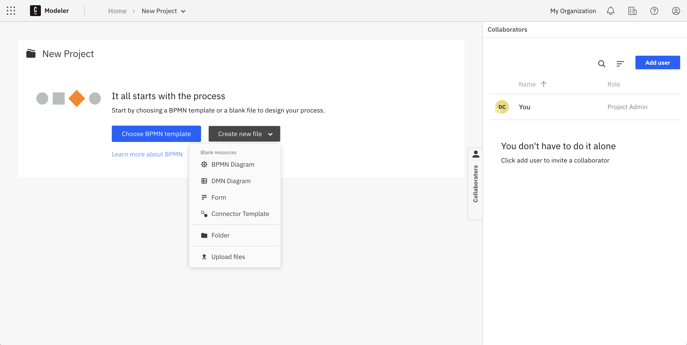
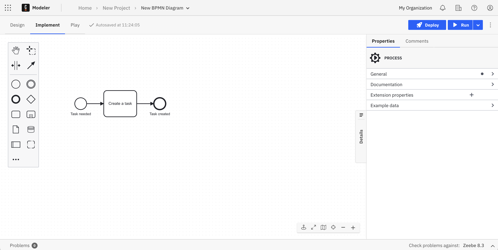
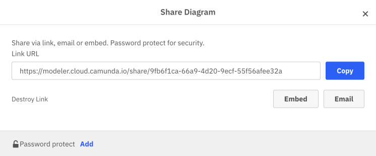
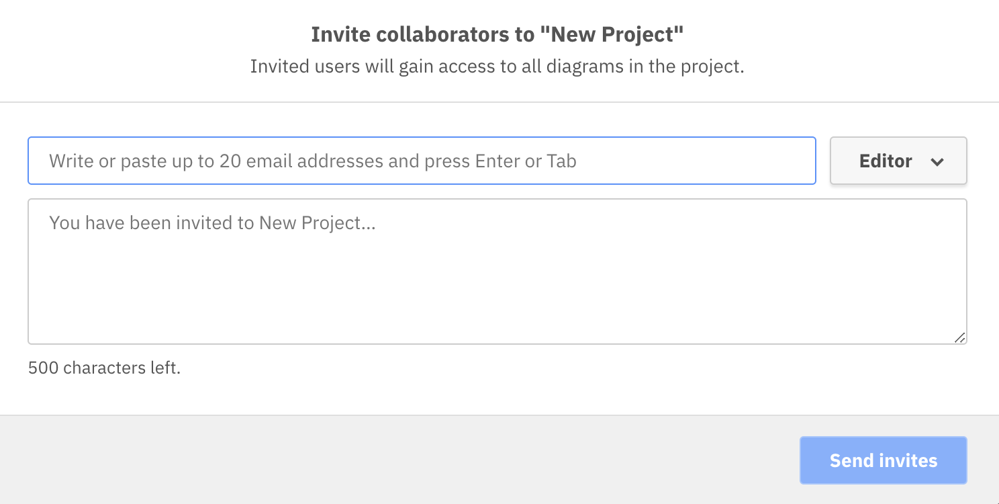

Model your first process
Design and deploy a process
In Camunda 8, you have two options to design and deploy a process, but for the purposes for this guide you will find instructions for Web Modeler.
- From Modeler, click New project.
- Name your project and select Create new > BPMN Diagram.

- Give your model a descriptive name, and then give your model a descriptive id within the General tab inside the properties panel on the right side of the screen.
- Create a task by dragging the rectangular task icon from the palette, or by clicking the existing start event and clicking the task icon. Make sure there is an arrow connecting the start event to the task.
- Name the task by double-clicking the task or using the properties panel.
- Create an end event by dragging the end event icon from the palette, or by clicking the existing start event and clicking the end event icon.
- No need to save. Web Modeler will autosave every change you make.

Share your process
You can share read-only models with teammates and other stakeholders via a link. To do this, follow the steps below:
- From your diagram, click the three vertical dots to the right of the Run button. Click Share.
- The Create share link modal will appear. Click Create link to generate a sharable link.
- Your Link URL will appear along with a blue Copy button. Note other options and features available when sharing a diagram, such as sharing via email.
- Send your link to your stakeholder to allow them to view the process. They do not need a Camunda account to view the process.

Collaborate on a process
If you want to invite collaborators to work on your process together, you'll need to first make sure they have the proper permissions and roles.
- First, add your colleague to the Organization. Click your account name then Organization Management.
- Navigate to Users > Add New User. Add your colleague's email and assign them an appropriate role - Developer is likely a good default option here as the user will have full access to Console, Operate, and Tasklist without deletion privileges. See all roles and permissions for additional details.
- Click Add. An email will be sent to the email you provided. Your colleague must hit Join to finish adding them to the organization.
- Now that they're added to the organization, you can add them to a project. Open Modeler, navigate to your project and open the Collaborators panel on the right side.
- Click Add user and find your colleague you added to your organization. Assign their role with the dropdown and click Send invites.

- After your colleague clicks Accept invitation, they will have access to the project based on the role you assigned.